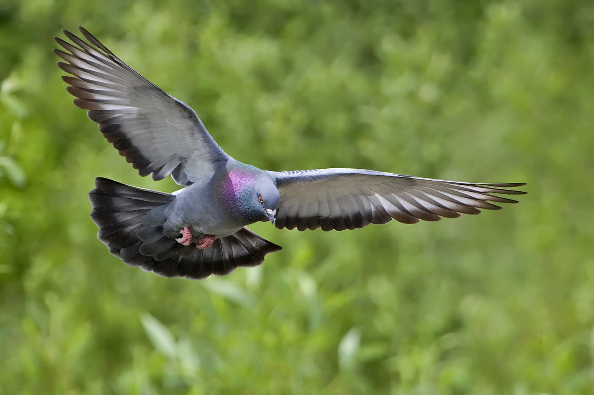

Birds are a group of warm-blooded vertebrates constituting the class Aves, characterized by feathers, toothless beaked jaws, the laying of hard-shelled eggs, a high metabolic rate, a four-chambered heart, and a strong yet lightweight skeleton.
Birds are a group of feathered theropod dinosaurs, and constitute the only living dinosaurs. Likewise, the closest living relatives of birds are the crocodilians. Birds are descendants of the primitive avialans (whose members include Archaeopteryx) which first appeared about 160 million years ago (mya) in China.